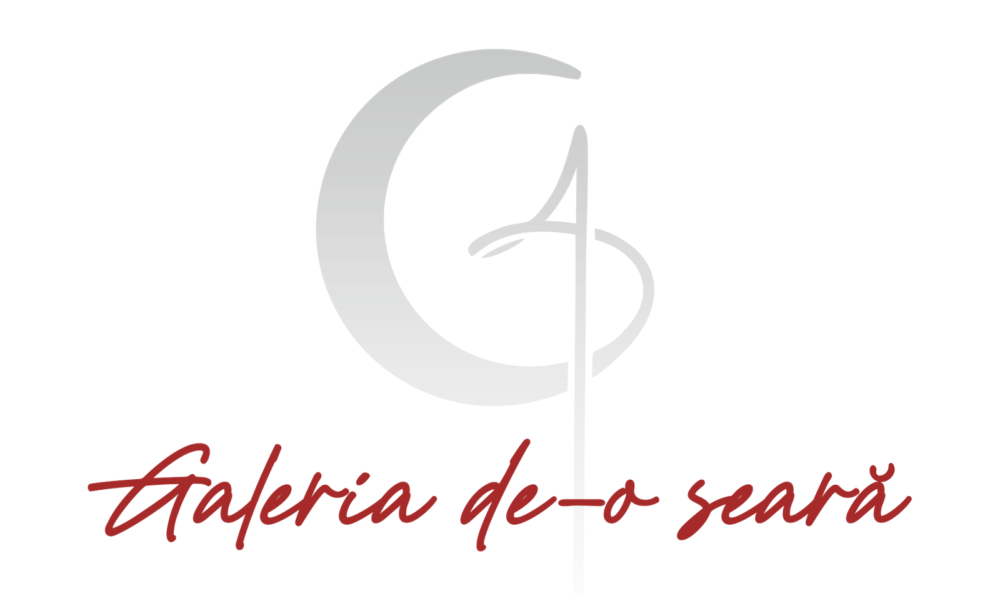
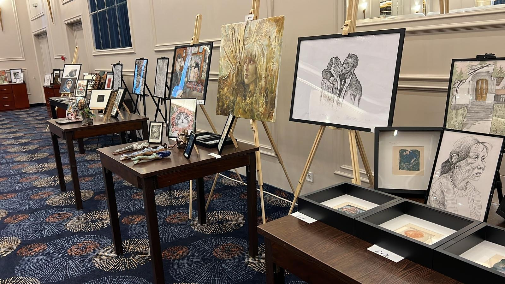
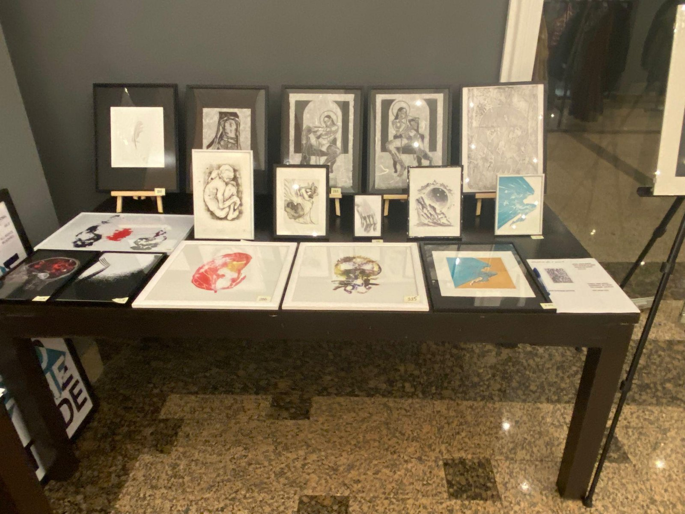
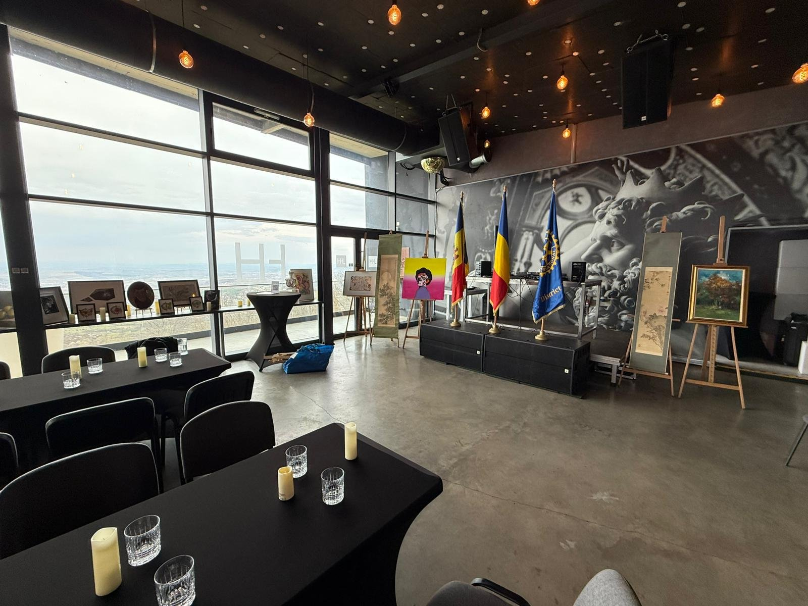
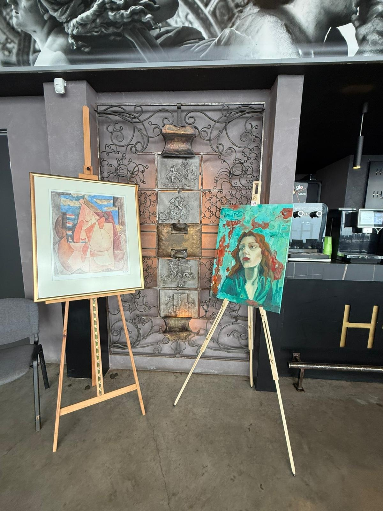
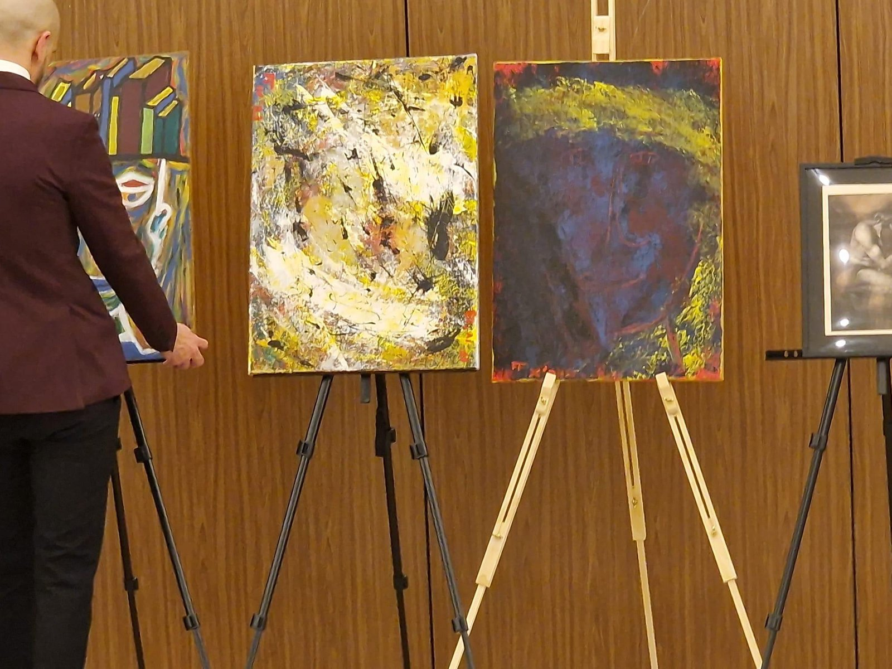
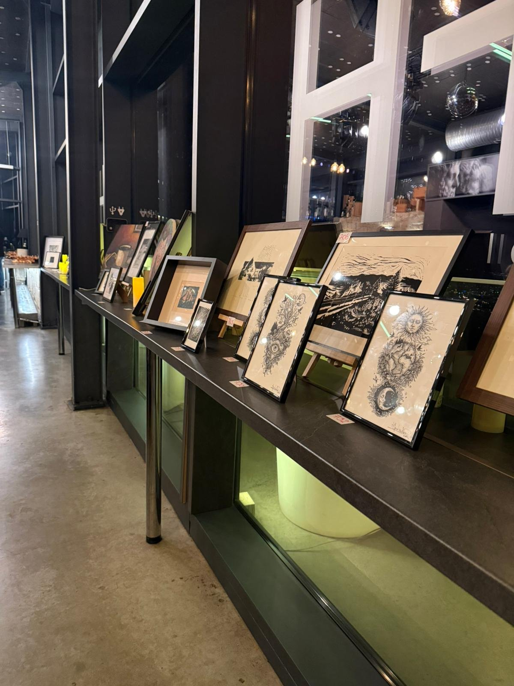
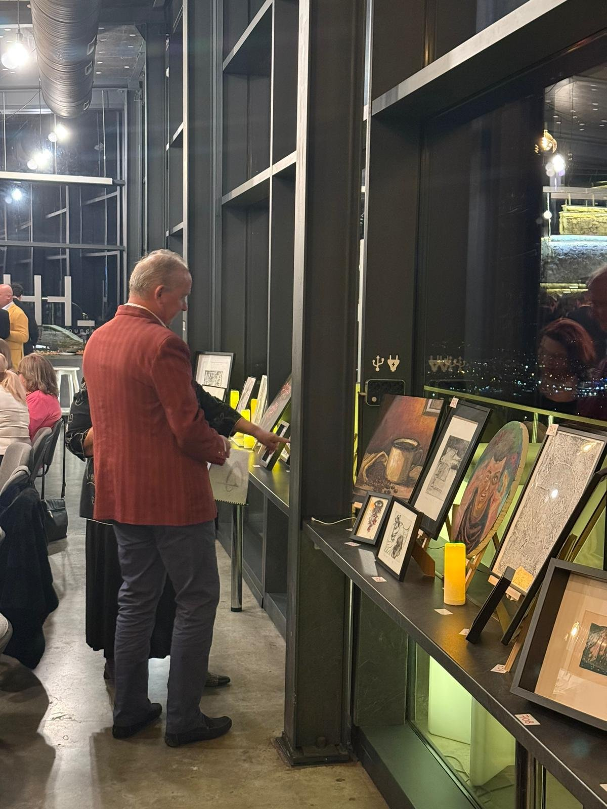

Galeria de-o Seară este un concept care își propune să sprijine studenții și tinerii artiști
în procesul de integrare și afirmare pe piața artistică. Proiectul constă în organizarea
unor expoziții pop-up, desfășurate în cadrul unor evenimente private și publice,
oferind astfel vizibilitate și oportunități reale pentru artiști emergenți.
Galeria de-o seară este un format de expoziție temporară care reunește artiști emergenzi într-un spațiu dedicat pentru o singură seară. Conceptul combină expunerea tradițională cu elemente interactive, precum sistemul de tip silent auction, oferind publicului o experiență autentică, directă și participativă în relația cu arta contemporană.
În același timp, proiectul poate fi integrat și în cadrul unor evenimente private sau corporate, ca o componentă artistică și caritabilă. Galeria poate fi adaptată pentru a susține cauze sociale, oferind organizatorilor posibilitatea de a include arta într-un context cu impact, unde o parte din fonduri pot fi direcționate către inițiative caritabile.
Misiunea noastră este să democratizăm accesul la artă și să oferim artiștilor emergenți o platformă credibilă pentru a-și prezenta lucrările. Credem că fiecare artist merită o șansă de a fi văzut și apreciat, indiferent de experiența sau conexiunile din industrie.
Industria artei poate fi dificil de penetrat pentru artiștii la început de drum. Galeria de-o seară elimină barierele tradiționale, oferind un spațiu incluziv unde talentul este singurul criteriu de selecție. Proiectul există pentru a crea punți între artiști, colecționari și iubitori de artă.
Fiecare eveniment durează o singură seară, creând un sentiment de urgență și exclusivitate. Artiștii selectați își expun lucrările într-un spațiu profesional amenajat, beneficiind de vizibilitate maximă într-un interval concentrat de timp.
Sistemul de silent auction oferă publicului posibilitatea de a licita confidențial pentru lucrările preferate. Această abordare elimină presiunea licitațiilor clasice și creează o metodă accesibilă de achiziție, sprijinind financiar direct artiștii.
Accesul la evenimente variază în funcție de contextul fiecărei seri. Unele întâlniri sunt deschise publicului larg, în timp ce altele se desfășoară pe bază de invitație. Ne dorim să păstrăm un echilibru între accesibilitate și experiențe curatoriate, adaptate specificului fiecărui eveniment.
De la primul eveniment din 2020, susținem artiști din universitățile și liceele de profil din Transilvania și Banat, oferindu-le vizibilitate și șanse de dezvoltare.







Galeria de-o seară este deschisă artiștilor emergenți din toate domeniile vizuale: pictură, sculptură, fotografie, artă digitală, ceramică, instalații și altele. Nu este necesară experiență anterioară în expoziții. Căutăm autenticitate, originalitate și dorința de a comunica prin artă, iar scopul nostru nu este să filtrăm creațiile, ci să oferim sprijin pentru promovare, vânzare și accesul pe piața de artă.
Oferim artiștilor un spațiu profesional de expoziție, promovare pe canalele noastre de comunicare, asistență în prezentarea lucrărilor, acces la o rețea de colecționari și iubitori de artă, precum și oportunitatea de a vinde lucrările prin sistemul de licitație. În plus, artiștii pot fi reprezentați de Galeria de-o seară la diverse evenimente, extinzându-și vizibilitatea pe piață. Totul, fără costuri pentru artist.
Procesul de aplicare este simplu: trimite-ne un portofoliu cu 5-10 lucrări reprezentative, o scurtă descriere a practicii tale artistice și informații de contact. Echipa noastră va evalua aplicațiile și te va contacta în termen de două săptămâni cu un răspuns.
Suntem în căutare de spații potrivite și deschiși către colaborări cu locații care pot găzdui evenimentele noastre, de la cafenele și centre comunitare, la alte spații alternative. Ne dorim să construim contexte vii de întâlnire între artiști și public. Dacă reprezinți un astfel de spațiu și vrei să susții arta emergentă, ne-ar plăcea să discutăm o posibilă colaborare. Oferim vizibilitate și aducem un public activ și implicat.
În același timp, suntem deschiși să dezvoltăm parteneriate cu instituții educaționale, precum licee de arte și universități de profil sau cu ONG-uri active în societate, care împărtășesc interesul pentru susținerea noii generații de artiști și dezvoltarea mediului cultural contemporan.
Parteneriatul cu Galeria de-o seară înseamnă asocierea cu un proiect cultural relevant, acces la o comunitate activă de iubitori de artă, promovare pe canalele noastre și oportunitatea de a contribui la dezvoltarea scenei artistice locale. Este o investiție în cultură și comunitate.
Planificăm să extindem proiectul în mai multe orașe, creând o rețea națională de evenimente Galeria de-o seară. Fiecare locație va păstra spiritul original al proiectului, adaptându-se specificului comunității locale și oferind artiștilor o platformă mai largă de expunere.
Dezvoltăm o platformă digitală care va permite artiștilor să-și prezinte lucrările online, iar colecționarilor să participe la licitații de oriunde. Componenta digitală va completa evenimentele fizice, nu le va înlocui, extinzând accesul la artă fără a pierde experiența directă.
Vrem să construim o comunitate activă în jurul proiectului, cu evenimente regularizate, workshopuri pentru artiști, discuții despre artă și oportunități de networking. Scopul este să creăm un ecosistem sustenabil care să sprijine artiștii emergenți pe termen lung.